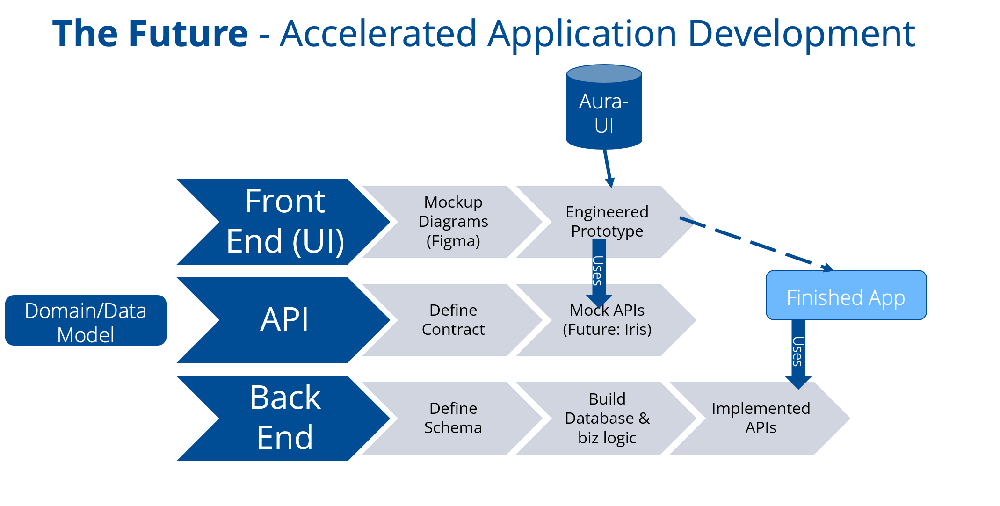

UI/UX @ Tricentis
May 2022 - August 2022
The project goal was to have a reusable Aura UI library of components that can be used to facelift interfaces for the company's future and current (React based) products. The components would function together as a front-end microarchitecture in a new feature requested by a client.
Role
UI/UX, Frontend Dev
As it stands the user creates a test run/cycle composed of several test cases. This is then tested. All companies need to be able to run these tests across multiple devices/Operating systems/ CPUs and more (this just being those that test software, same issue occurs in hardware testing too). Therefore, currently users need to duplicate and edit the exact same test runs for every variant configuration. User research shows that configurations can contain between 50 to 100 variables at a time, meaning a multitude of test-runs need to be duplicated for every variant. This is both time consuming and frustrating.
The problem statement was first developed after speaking to the client and deciding what is essential and what is to be fixed. This clarified that the main goal was to improve the ability for bulk use and large scale test creation since the client often has hundreds of variables to be tested at once. Moderators/clients creating tests needed to be able to duplicate and edit test runs depending on what variables and configurations the tests are applied under as well as have some privacy options in regard to who can view what test case and/or what variables. The existing configuration section is small and limited in capabilities. It is also hard to navigate and has a difficult user experience as the interface is not very intuitive. The new configuration section will allow for automatic test-run duplication with preset/ user defined configurations as needed. It will also allow for more user control of the testing process, faster test planning, less room for errors or overlap, and more enticing for new customers as less work is required to create a testing plan.
- 
These ideas for how to structure a bulk editing screen were designed in Figma. Many mockups were generated, and peer reviewed which led to the current design. It is modern, sleek and effectively allows many variables and configurations to be edited/tested at once. After the base was created in Figma, a Material-UI and aura based interface was chosen. The components were created based on MUI documentation with TypeScript and rendered on Storybook to confirm the functionality, sandbox, and test UI decisions. Based on the Figma design the priority components were done first. Then they have been combined together for a proof of concept as a fully functional React application. This is an interactive interface that allows one to test how the functionality and flow will be for a potential client user.
I had the most wonderful experience that summer at tricentis. My goal was to find an outlet to grow and learn outside of the classroom and learn industry processes. Putting to use what I learned while working alongside developers internationally was thrilling. I see the worldwide nature of tricentis being able to span across timezones and languages as an incredibly beautiful asset. There is a merge in culture of all sorts. However, one culture I found to hold a consistent sentiment was the never-ending miscommunications and blend between developers and designers. Yes, the teams had to battle timezone and cultural holidays to meet deadlines but I didn’t find that to be the main barrier in seamless flow. It seemed to be a matter of mindset. Developers and designers hold such different strengths and personality traits that when it comes to the inevitable collaboration of the two to enhance a companies product there is issues. These issues led to increased time lost in not only mis but lack of communication. I think the world of UX is expanding tremendously but with that comes educating all employees within the industry/company how important this is. how integral UX research and design principles are when it comes to fast, efficient, easy to use products. To combat this gap I propose an in-between communicator who acts as the medium between creatives and coders. One who understand the technical aspects of code and what is and isn’t possible while having a key eye for design principles and how to enhance a customers experience beyond the technical aspect. The people I met inspired me. Their passion reminded me why I chose this field and it fired me up with much needed energy to propel my career somewhere I am always learning and growing. Thank you Tricentis for being such a positive influence on me. The teams, their leaders and everyone in between :)